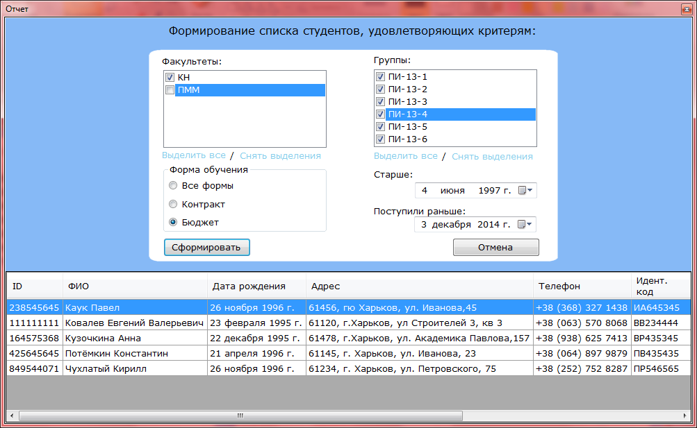

У Вас есть возможность сформировать отчет, в котором будут отображаться все студенты, удовлетворяющие определенным критериям. Для этого необходимо в меню Файл выбрать пункт Сформировать отчет или нажать коминацию клавиш "Ctrl+P". Вы можете выбирать Факультет и Группу для которых необходимо создать отчет. Также есть возможность фильтровать студентов по факультетам, группам, возрасту, форме обучения и дате зачисления.

Для генерации отчета необходимо нажать кнопку "Сформировать".